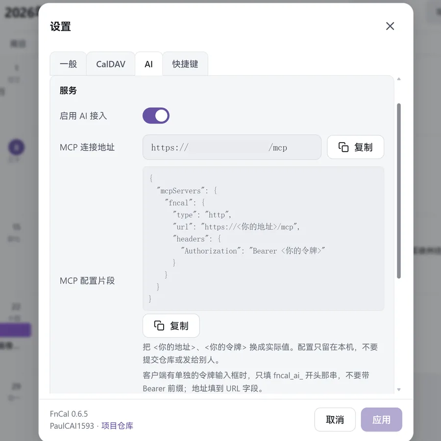
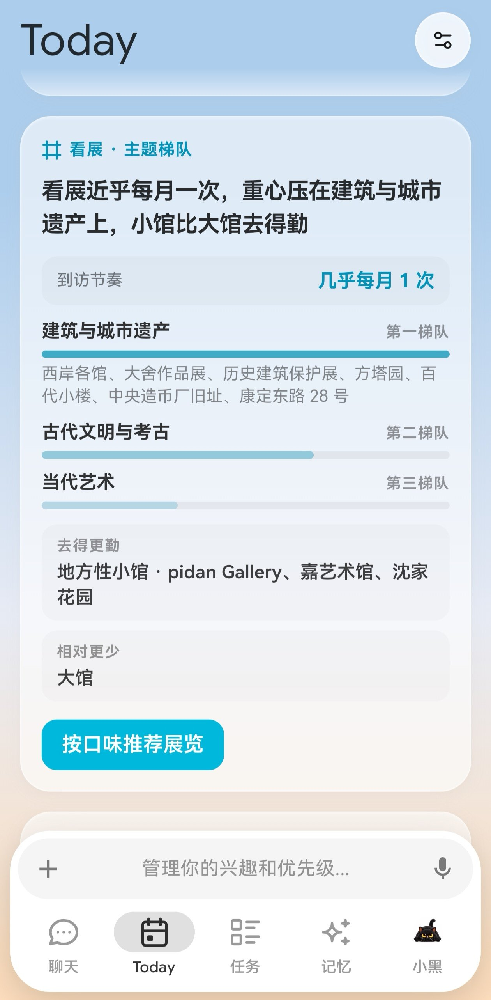
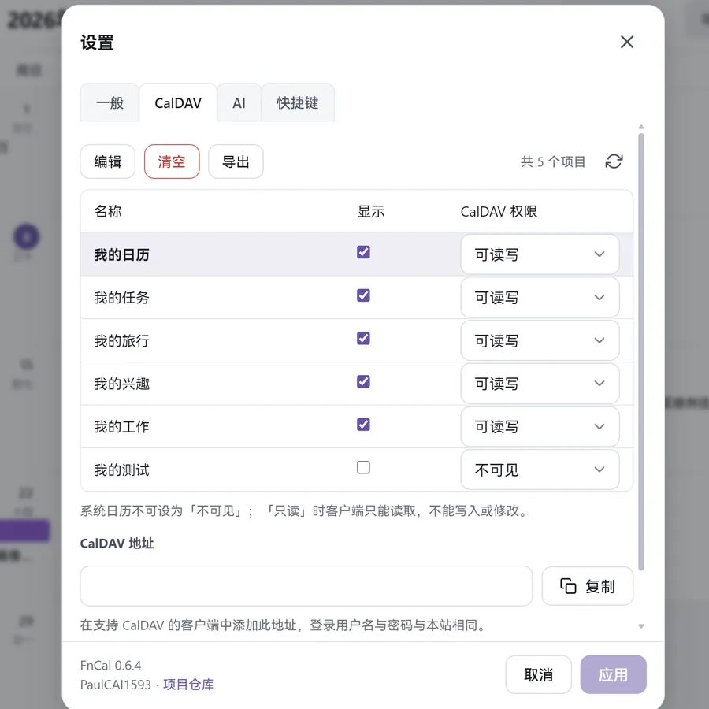
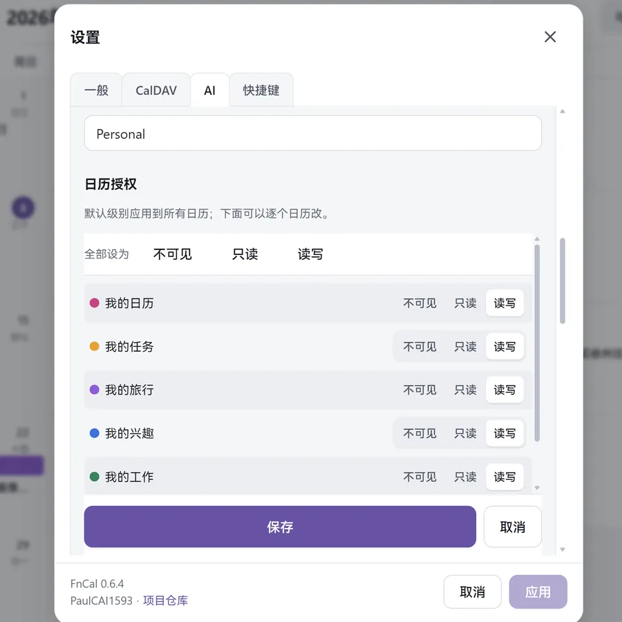

01
读懂日程，推荐行程
只读授权范围内的日程，提炼你的时间规律与偏好。
结合空档给出可行安排，你挑完再写进日历。
飞牛OS 应用 · 自托管日历 · v0.7.24
FnCal 是跑在飞牛 OS 上的日历应用，自带 CalDAV 服务：手机和电脑上的日历客户端直接读写同一批日程。AI 助手能帮你读、帮你记，但写进日历之前要先过你这一关。运行时不访问任何第三方云。
国内访问慢时可用 Gitee 镜像，内容与 GitHub 相同。
安装包 802,026 B · 安卓 APK 988,397 B · 技能包 29,576 B · 校验文件 83 B。先看 两条 AI 能力、提案与审批 与 六条特色。
/vol1/@appdata/FnCal/ AI capabilities
接上只是第一步。真正决定它能做什么的，是你在凭据里划的那条线。
01
只读授权范围内的日程，提炼你的时间规律与偏好。
结合空档给出可行安排，你挑完再写进日历。
02
AI 的改动先变成提案，附上改什么、改在哪、什么时候。
你点「批准」才写入；每一步都留审计记录，可以回溯。


AI assistant · MCP
通过 MCP 把 FnCal 接进 AI 助手。它读得到的内容、改得动的范围、写完要不要你点头，全部由一个凭据决定。默认状态下 AI 写不进你的日历：它只会留下提案，等你在 FnCal 里点「接受」，或者把一条一次性审批链接发给你。批准或拒绝之后，FnCal 会给客户端推一条通知；客户端也可以主动等待审批结果。
/a/… 链接发给你；打开就是提案列表，逐条或批量处理。/a/<一次性令牌> 只返回一张 HTML 提案页，页面与链接里都没有 API 地址；服务端只存令牌哈希。| 设置 | 可选值 | 作用 |
|---|---|---|
| 日历授权 | 不可见 / 只读 / 可写 | 不可见的日历对 AI 等同于不存在，连名字也看不到 |
| 时间窗 | 过去 N 天 / 未来 N 天，可不限 | 只读范围内的日程，超出范围的查询返回空 |
| 字段开关 | 标题、时间必给；地点、描述、参与者可选 | 连地点与参与人都可设为 AI 不可见 |
| 新建、修改 | 提案 / 直接通过 | 默认提案；直接通过等于把写入权交给 AI |
| 删除 | 提案 / 回收站 | 回收站模式下删除可恢复，保留期内可取回 |
客户端：凡支持自定义 MCP 的都能接，如 Claude Desktop、Cherry Studio。
在 FnCal 里打开「设置 → AI」页签，新建凭据后把连接地址与令牌填进客户端；令牌只显示一次。配置细节见 README；AI 技能包随 Release 附带，可在客户端里「立即更新」。
Features · 六条
先说值不值得装，再说怎么装。每一条都对应一件具体的事。
01
账号、日历、事件与任务全部落在 NAS 本机，运行期不请求第三方服务。
飞牛 OS 应用包，填端口与管理员账号即可；也提供 Docker 部署，手机平板同样可用。
02
按 RFC 4791 实现，事件与任务都能同步。
导出是标准 .ics，时区与重复规则不丢。
03
年、月、周、四日、日、日程，同一批日程。
左侧迷你月历点年月即可跳转。
04
各自有名称、颜色、描述与显示开关。
事件默认继承日历色，单条可另行覆盖。
05
待办放进独立的「任务」日历。
任务以 VTODO 暴露给 CalDAV 客户端。
06
给日程和任务挂一个 emoji 标签，分组管理、拖动排序，一个日程只挂一个。
月视图、周 / 四日 / 日、日程列表与搜索都显示「emoji + 名称」，可按标签筛选，导出写进 CATEGORIES。
.ics 可新建日历或并入已有日历；导出按日历单独进行，保留时区、重复规则与提醒。Install
飞牛 OS 用户走应用中心；其他环境用 Docker。装之前先核对包的 SHA-256。
http://<NAS-IP>:<端口>/，用刚设的账号登录。升级在应用中心覆盖安装即可，数据保留；升级前会自动备份数据目录。源码构建需要 Node.js 22，步骤见仓库 BUILD.md。
# 先核对哈希（Linux / macOS） sha256sum FnCal-0.7.24.fpk # Windows PowerShell Get-FileHash .\FnCal-0.7.24.fpk -Algorithm SHA256 # 期望值 14375E0AF1B2C36D7249BCB011BDAB3D9D89D89D448C78BBB2ACEEBEF0548387
Docker 部署见仓库 DOCKER.md；数据卷挂 /data，HTTPS 端口默认 5243。
Connect AI · 五步
安装包只带 FnCal 本身，AI 助手要另外接。五步都在本机完成：FnCal 不向外发请求，是你的 AI 客户端来连它。
/mcp 一律返回 404。
fncal_ai_…，共 41 个字符，立刻复制走。
读这份文件，当作我的 FnCal 日历使用说明，读完记住： https://gitee.com/Paul1593/FnCal/raw/main/skills/fncal-mcp/SKILL.md 拉完告诉我版本号，后面的操作按这份说明来。这个地址打不开，就让它换 GitHub 源。客户端不能联网，就用 Release 里的
FnCal-MCP-Skill-0.7.13.zip 解压给它。
http(s)://<你的地址>/mcp，令牌填 fncal_ai_…。客户端有单独的「令牌 / Bearer Token」输入框，就只填令牌本体，不要带 Bearer；只让写原始 HTTP 头时，写成 Authorization: Bearer <整串令牌>。{
"mcpServers": {
"fncal": {
"type": "http",
"url": "https://<你的地址>/mcp",
"headers": { "Authorization": "Bearer fncal_ai_…" }
}
}
}
https://。fncal_ai_。Bearer 前缀。改成 Authorization: Bearer <整串令牌>，令牌不用换。browser_signature_banned：前面的 Cloudflare 拦了客户端默认 User-Agent。给客户端设一个普通 UA，例如 FnCal-MCP/0.7.13，再重试。Retry-After 等待；同一凭据的 REST 与 MCP 共用一个额度。create_event 都看不到。放开一个日历到「读写」，再重连客户端。Clients & data
凡按 RFC 4791 实现的客户端都能接上；数据在自己的目录里，备份与迁移由你决定。
| 客户端 | 平台 | 怎么接 |
|---|---|---|
| DAVx5 | 安卓 | 添加账户时选「用 URL 和用户名登录」，填服务器地址、用户名与密码，再选要同步的日历。 |
| Thunderbird | Windows / Linux | 新建「网络日历」，位置填服务器地址，输账号密码后让它自动发现。 |
| eM Client | Windows / macOS | 账户里选 CalDAV，填服务器地址与账号。 |
| iOS / macOS 系统日历 | iOS / macOS | 未做真机验收，行为以你实际测试为准。 |
服务器地址统一填 http://<NAS-IP>:<端口>/，用户名与登录账号相同；密码可以用登录密码，也可以单独建一个 CalDAV 专用密码，便于随时单独吊销。
数据在应用数据目录（飞牛 OS 是 /vol1/@appdata/FnCal/，Docker 是 /data 卷）：accounts.json 是账号与设置，secret.key 是会话与加密密钥（不要删），calendars/ 放各账号的日历与事件，logs/ 是审计与访问日志。
备份就是整目录打包，恢复时把目录放回原位再启动。单本日历也可以用「导出」拿到标准 .ics。
存在 NAS 的应用数据目录（Docker 是 /data 卷）：账号、密钥、calendars/ 与日志。运行时不需要外网；AI 接入也是你的客户端去连 FnCal，不是 FnCal 去连外部服务。
凡按 RFC 4791 实现的客户端都可接入：DAVx5（安卓）、Thunderbird、eM Client 等。iOS / macOS 系统日历未做真机验收，行为以你实际测试为准。
整目录备份应用数据目录即可（飞牛 OS 是 /vol1/@appdata/FnCal/，Docker 是 /data 卷；账号、密钥、日历与日志都在里面）；单本日历也可以用「导出」拿到标准 .ics。恢复时把目录放回原位重启。
六个视图在手机上保留大屏的元素与信息，只按宽度缩放；底栏四项（提案、当前视图、今天、任务），横滑切周期，点左上角 logo 开合侧栏。
Security & self-hosting
自托管的意义是：谁在访问、访问了什么，你都能查到，也能随时收回。
CalDAV 专用密码与 AI 凭据各有一套日历权限：给 CalDAV 客户端开的日历，不会自动放给 AI；改一边不影响另一边。


默认不会。凭据的「新建、修改」是「提案」时，AI 只能留下提案，需要你接受或通过一次性审批链接批准；只有把它设成「直接通过」，AI 才会直接写入。删除同理，可设成提案或进回收站。
可以。把端口留在局域网内最省事；要远程访问就套 HTTPS 反向代理，并留意路由器的端口映射是否是你想要的暴露面。
Releases
当前版本 0.7.24（2026-11-12）。旧版本不要再装；升级用应用中心覆盖安装，数据保留。
create_tag、update_tag、delete_tag：可新建标签、改 emoji / 名称 / 分组、删除标签；tag 参数可传 id 或名称。SKILL.md，最低版本 0.7.13。create_tag 的标签名上限改为 1–12 characters，与实现一致；README 补上 AI 标签权限的说明。没有功能变化。CATEGORIES，标准客户端也能看到 emoji。0.7.0 至 0.7.9、0.7.11 与 0.7.12 是测试包，未对外发布，内容已并入本版；0.7.10 已对外发布；0.6.11 与 0.6.15 已对外发布。